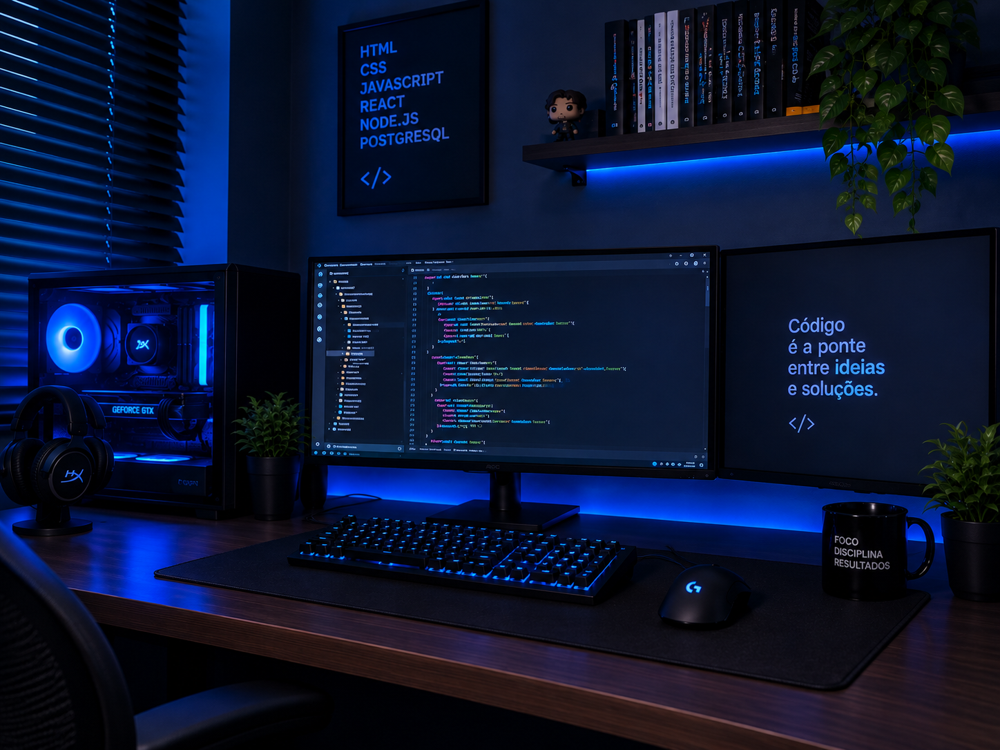

Olá, eu sou Marcel! Sou estudante de Engenharia de Software e apaixonado por tecnologia e desenvolvimento de sistemas. Busco transformar ideias em soluções digitais simples, eficientes e funcionais. Tenho conhecimentos em desenvolvimento web, programação, bancos de dados e tecnologia da informação, sempre buscando aprender novas ferramentas e evoluir profissionalmente. Meu objetivo é criar soluções que facilitem processos, resolvam problemas e gerem resultados.